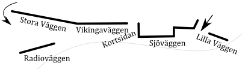
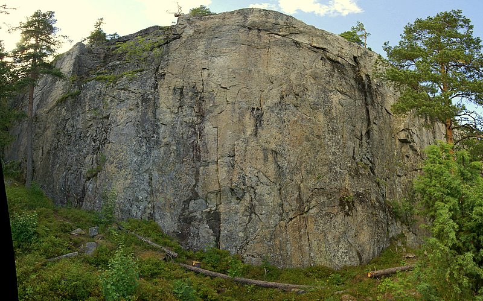
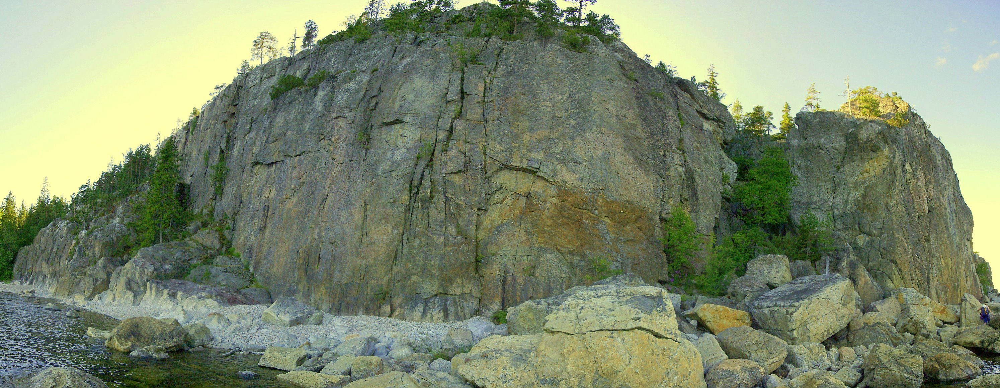
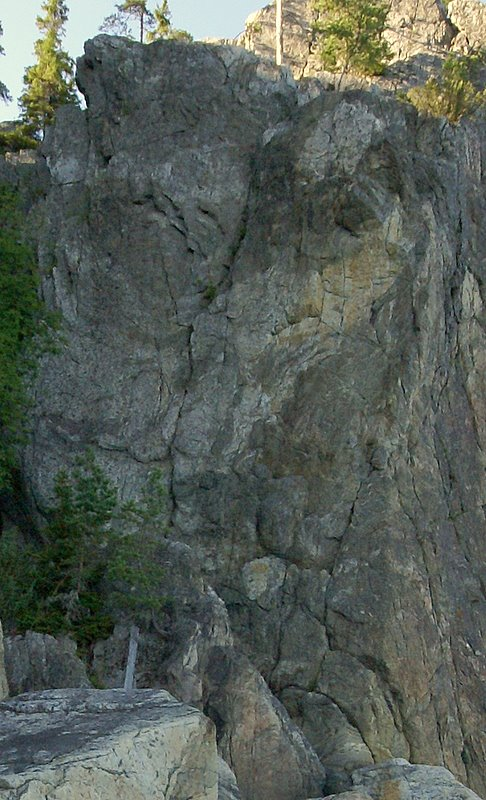
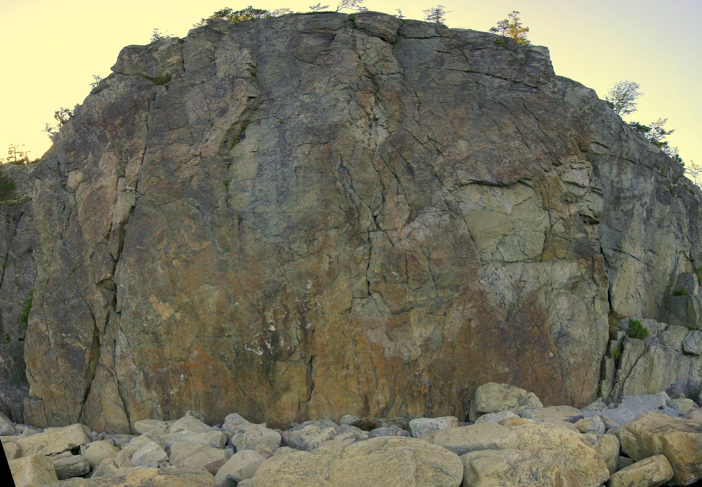
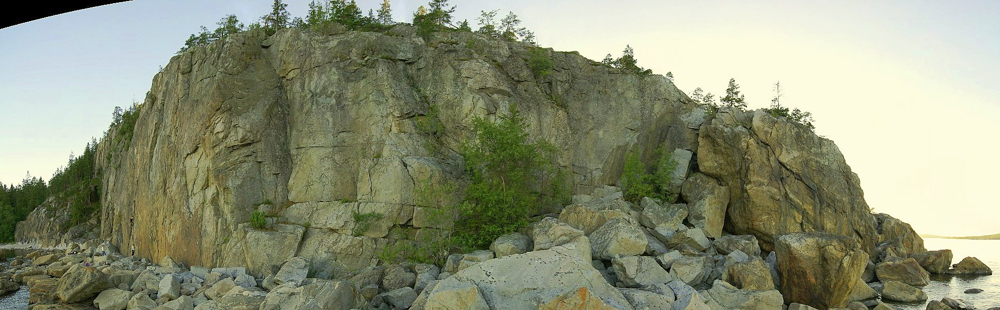

Brattberget
Lat: 62.329806
Long: 17.426977
[[Bild:Brattberget.jpg|thumb|400px|right|Anne & Linda klättrar Skrubben i norrländsk kvällsol. Foto:
Per Lindh
]]
Allmänt
En handfull klippor på stranden. Klättringen är huvudsakligen mixad, med både egna kilar och stödbultar. Sedan en tid tillbaka rustas klippan successivt av Sundsvalls klätterklubb och den bjuder nu även på mycket fina sportturer & tradleder. Brattberget har ca 60 leder av varierande kvalité.
Karaktär
[[Bild:Onda_vibrationer_olof_bjerke.jpg|150 px|thumb|Klättrare på Onda vibrationer, 6+. Brattberget.
Foto: Christian Gulliksson.]]
Brattberget är ett berg som utvecklades på den tiden när män var män och klättrare mera män. Flera av lederna gjordes med marginella egentillverkade säkringar och lederna kan inte sägas vara den mest välsäkrade med dagens mått mätt.
Då detta gjort att många fina men livsfarliga leder i 5/6-registret mossat igen har Sundsvalls klätterklubb påbörjat en omsorgsfull ombultning av klippan för att göra några av de insomnade lederna tillgängliga för en bredare publik. Brattberget bjuder därför numera på ett antal mycket fina helbultade sportleder & tradleder och de gamla klassikerna har fått (och får) nya fräscha ankare.
Några av lederna på Brattberget är av mixkaraktär där du behöver några kilar och sen får resten bultat. Eller tvärtom. Många leder har toppankare eller närliggande ankare (även tradklassikerna som t.ex. Skrubben) som går att komma åt uppifrån. Ta med några långa slingor om du vill toppa.
Crimpar utgör de flesta greppen och det finns också någon enstaka spricka. Lutningen på väggarna är just under 90 grader.
Vägbeskrivning
Från Sundsvall kör man söder ut till Kvissleby, ca 15km. Vid trafikljusen tar man vänster mot Essvik. Kommer man på E4 söderifrån kör man förbi Kvissleby centrum (som man har på höger sida), och svänger höger vid trafikljusen.
Kör över Ljungan och ta vänster direkt efter bron. Kör igenom Essvik och Stockstrand och fortsätt tills du når några cisterner. Ett par hundra meter efter cisternerna går en liten vägsnutt in till vänster - kör in på den och parkera i dungen. Följ sen stigen över berget till vindskyddet - drygt 5 minuters anmarch. Själva klippan ligger sydost om vindskyddet - eller till höger om det när man kommer från parkeringen.
För att ta sig ner till klippan finns det (förutom firning) två vägar. Antingen:
Miljö
Östvänt och nära havet. På grund av detta så startar säsongen här ganska sent, men mitt i sommaren är det underbart svalt och skönt. Skulle det ändå vara för varmt så kan man ta sig ett dopp mellan lederna.
Camping

Det finns bra möjligheter till övernattning vid vindskyddet på bergets topp. Det kan vara klurigt att hitta bekväma tältplatser så ta med ett myggnät och sov i vindskyddet.
I närheten av vindskyddet finns också dass. Vatten får man bära med sig.
Leder

Lederna på Brattberget är uppdelade på sex stycken väggar. Vill man fira ner finns det bra ankare på i stort sett alla väggar, utom möjligen Vikingaväggen som är lite svår att komma åt uppifrån.
Lederna nedan anges från vänster till höger. Flera leder (i synnerhet på Stora väggen) har en sten vid starten med ledens namn. Rena sportturer har här graderats med fransk gradering medans trad & mix leder har graderats med svensk gradering.
Stora väggen

Stora väggen ligger ovanför alla andra klippor och är den enda som inte har direkt strandkontakt. Du tar dig hit lättast genom att följa stigen ovanpå berget, och gå ner på stigen som tar dig till Over the top. Det är inga problem att sen ta sig ner till de andra klipporna på stranden.
-
- Over the top
- 6a
- Ombultad 2008. Har flera bultar än tidigare och nytt ankare.
-
- Raka spåret till Chicago
- 5b
- Mycket fin väggklättring. Leden har fått nya bultar och är nu en ren sporttur. Firningsankare.
-
- Halvrobban
- 6a+
- Följer först flaksprickan, därefter känslig väggklättring. Fin. Ombultad 2008 och nu en ren sporttur. Ankare.
-
- Död åt TSV
- 6
- överhäng i starten och sedan en spricka. Svårsäkrad.
-
- Fyrvaktaren
- 6-
- Följer en tydlig spricka. Bultat ankare.
-
- Nebula
- 5a
- Start i diedret till vänster om Berkaleden sedan utsteg lite vänster mot det mörka hålet.
-
- Berkaleden
- 6-/6
- Börjar till höger om arêten. Mixad fin led
-
- Memsahib
- 5b+
- Följer flakformationer strax höger om Berkaleden. Ankare
-
- Storm
- 6+
- Följer ett spricksystem. Dåligt säkrad på slutet.
-
- Halvdesperat
- 6b+
- Stand i 1 st limbult eller upp till Vängåvanhyllan. Kompletteringsbultad 2009
-
- Vängåvan
- 6-
- Följer en tydlig spricka. Bultat ankare
-
- Till Malin
- 6c
- En ren sporttur. Ankare.
-
- Snaggraggaren
- 6
- Fira av från ''Vängåvan''.
-
- Sunrise
- 5+/6-
- Startar i hörnet och följer sprickan upp. ankare
-
- Vanilla rush
- 6c
- Ihållande väggklättring. Fin. Ankare.
-
- Magnolia
- 6b+
- Ihållande väggklättring. Fin. Ankare.
-
- Prokrastinering
- 6b
- Följ aretet till "tanden" sedan rakt över överhänget, känns lite utsatt. Om man har uppskjutarbeteende kan man smita ur halvvägs till ankaret av "Inre röster" då 6a. Ankare. Välsäkrad.
-
- Biverkan
- 5
- Insteg bakomför "Prokrastinering", kamin och sprickan ovanpå areten. Där sprikan viker till vänster går man in till "Inre röster" och till ankaret, alt. usteg via "Prokrastinering" (bult). Bultat ankare
-
- Inre röster
- 5+
- Följer en tydlig spricka till ankare halvägs upp på väggen. Funkar med vanligt rack (upp till Camalot #3) men bra med stor kamkil typ Camalot #4. Bultat ankare
-
- Du, jag och psykologen
- 6+
- Följer en diedret och spricklinjerna hela vägen upp. Bultat ankare
-
- Picea
- 6c+
- Ihållande väggklättring. Fin. Ankare.
-
- Rätt medicin
- 6-
- Följer en spricka en bit upp till slutet som går i en slags dieder. sopad och rensad 2009, det tidigare osäkrade slutet är kompletterat med en bult.
Vikingaväggen

-
- Tors vrede
- 7-/7
- Långt mellan bultarna.
-
- Frejas fröjd
- 6c
- Rensad & sopad 2012.
-
- Helt apropå
- 5+
- Svårsäkrad vid kruxet.
-
- Ont direkt
- 6b/6
- samma start som ont i stjärten de tre första bultarna sedan rakt upp genom taket.Det går att få några friends innan taket.
-
- Ont i stjärten
- 6a
- helbultad linje sedan 2008. Välsäkrad.
-
- Trappstegen
- 3+
- Svårsäkrad, lös och djävlig.
-
- Snabbspolning
- 5-
- Följ sprickan något till höger om ''Trappstegen''.
-
- Odens öga
- 6b
- Sprickan i taket.
-
- Eufrat
- 5+/6-
- Den vänstra av de två tydliga högerlutande sprickorna. Markant krux några meter upp. Kruxet kräver Camalot #4 eller större för adekvat säkring.
-
- Tigris
- 5
- Den högra av de två tydliga högerlutande sprickorna. Fina handjam.
-
- Kaminen
- 5-
- Kamindelen är enkel och inte bökig.
-
- Off-width sprickan
- se nedan
- Gå in under det stora blocket och skrambla upp till en avsats där det finns en off-width spricka till vänster. Annorlunda och intressant klättring med flera bestigningsvarianter. Nedan beskrivs två. Minst två större kamkilar typ Camalot #4 kan vara bra för bekväm säkring.
-
- Off-witdh free
- 6
- Når man så får man, dvs hitta lättaste vägen upp i närheten av sprickan. Stämma mot det stora blocket och utsteg lite till höger om sprickan kan vara två bra tips.
-
- Off-width pure
- 6+?
- Inga klämblock får användas och utsteget skall ske via sprickan. Stämklättring kommer också här till heders, fast nu bara mellan väggarna. Lite småbökig.
Kortsidan

Detta är den vänstra kortsidan av Sjöväggen.
{|
|- valign="top"
| width=300px|
-
- Neverland
- 6-
- Breda sprickan upp till det stora klämblocket. Gå runt arêten till diedret och sedan rakt upp.
-
- Onda vibrationer
- 6+
- Upp i sprickan. Följ flaket åt vänster när du kommer upp till ''Mindre vibrationer''. Ankare.
-
- Norskdödaren (mer vibrationer)
- 5+
- Rakt upp över bullen. Delar första bult med ''Mindre vibrationer''. En bit upp till nästa säkringspunkt från första bulten. Ankare.
-
- Mindre vibrationer
- 4+
- Start i en tydlig spricka. Efter första bulten går leden snett upp åt vänster till sprickorna till vänster om överhänget. Därefter rakt upp.
Sjöväggen

[[Bild:skrubban.jpg|frame|Klättrare på Skrubben, 6. Brattberget.
Foto: Johan Hedman.]]
{|
|- valign="top"
| width=300px|
-
- Blitzkrieg
- 6
- Leden går i ett "Z"-mönster.
-
- Skrubben
- 6
- Klassikern på berget. Följer en spricka som till en början är riktigt bred, som smalnar av efterhand. Ankare.
-
- Utan ork
- 6c+
- Ihållande sportklättring, bultat ankare 2008
-
- Saling the seas of cheese
- 7a+
- Kort. Ankare.
-
- Neros pendel
- 7-
- Man vill inte råka ut för neros pendel. sopad 2012
-
- Listig och stark
- 6a
- Uppsprucken klippa, med goda grepp.
-
- Den trallande pedofilen
- 6+
- Efter 1:a BB klättrar man runt areten och kopplar en BB runt hörnet. Sedan klättrar man tillbaka runt areten.
-
- Misstänkta förbindelser
- 6
- Svärsäkrad på slutet.
-
- Premiärdiedern
- 5-
- Följ diedern från början till slut.
-
- Disco's out, murder's in
- 6b
- Samma insteg som Premiärdiedern.Nytt ankare & kompletteringsbultad 2009
-
- Beska droppar
- 7a
- mantla upp & Stand i ankare, sopad 2012.
-
- Fotflax
- 6
- Svatur precis efter nedstigningen. Stand i enkel bult.
-
- Hylands hörna
- 7-
- sport Dieder vid slutet av nedstigningen.
Lilla väggen

-
- Pöket
- 4
- Kort led. Går över två block i nedstigningssprickan.
-
- Böket
- 4+
- Startar på den stora stenen. Går runt hörnet och sedan rakt upp.
-
- Nya chanser
- 6-
- Följer ett spricksystem med en travers åt vänster ca 3m meter upp. Välsäkrad.
-
- Stela chanser
- 6
- Gemensam start med Nya chanser. Leden går rakt upp där Nya chanser traverserar vänster.
-
- Stela lemmar
- 6+
- Startar till höger om Stela chanser. Gemensamt utsteg med Stela chanser.
-
- Nya lemmar
- 6c+
- ren sportled som gåtts igenom 2009, ankare i två bultar
Radioväggen
Radio väggen ligger under stora väggen och är en bra klippa att lägga topprep på om man har barn eller nybörjare. Du behöver kilar och slingor för ankarna.
-
- Radio Nova
- 4+/5-
- Friend vid utsteget.
Länkar
En utskriftsvänlig variant av föraren kan ni hitta på
.
Kategori:trad
Kategori:Sport
Kategori:Mix
Kategori:vertikalt
Kategori:Saknar leder
Kategori:Saknar skiss
Kategori:Medelpad
Copyright (C) Permission is granted to copy, distribute and/or modify this document under the terms of the GNU Free Documentation License, Version 1.3